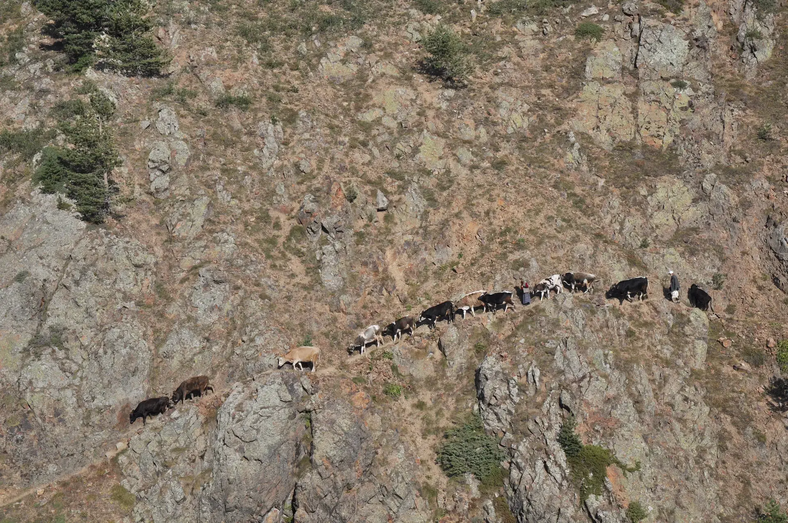

Fotoğraf Okuma No: 4
08 ŞUBAT 2026
|
BELGESEL ANALİZ

Anın Belgelenmesi
Siyah beyazın dramatik gücüyle harmanlanmış bu kare, gündelik bir anın ölümsüzleştiği o nadir saniyelerden biri. Kompozisyonun kalbinde yer alan figür ve onun çevreyle etkileşimi, izleyiciyi bir hikayenin içine çekiyor.
Işık ve Gölge Oyunu
Yandan gelen sert ışık, objelerin dokusunu ve karakterini ön plana çıkarırken; derin gölgeler sahneye gizemli bir derinlik katıyor. Nikon D90'ın klasik sensör yapısı, ton geçişlerindeki yumuşaklığı ve kontrast başarısını bu karede bir kez daha kanıtlıyor.
"Fotoğraf, sadece bir görüntünün kaydı değil, bir duygunun dondurulmuş halidir. Bu karede hissettiğimiz şey; zamanın durduğu o sessiz boşluktur."
Teknik İnceleme
18-55mm kit lensin sağladığı perspektif, sokağın doğallığını bozmadan sahneyi geniş bir çerçeveden görmemizi sağlıyor. f/5.6 diyafram, arka planı hikayeden koparmadan yeterli bir netlik alanı sunarak belgesel dilini güçlendiriyor.
Bu Analizi Paylaş